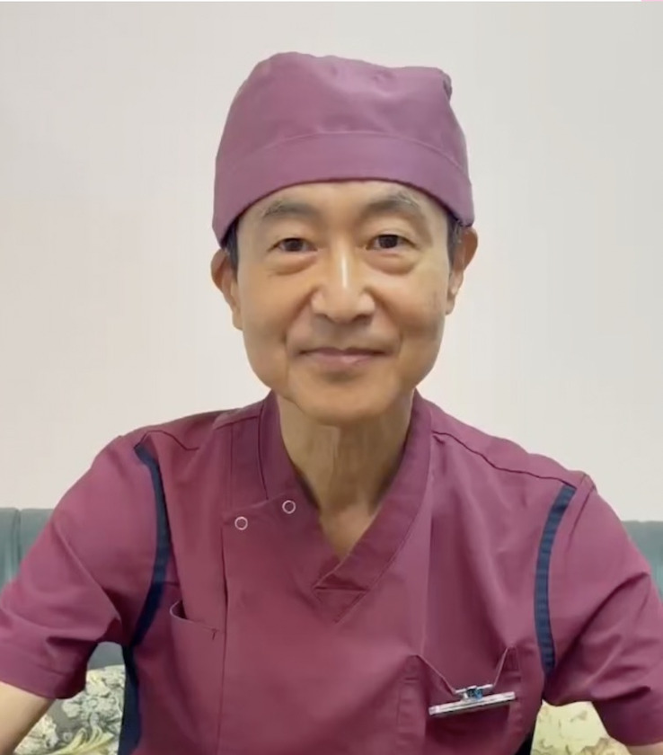
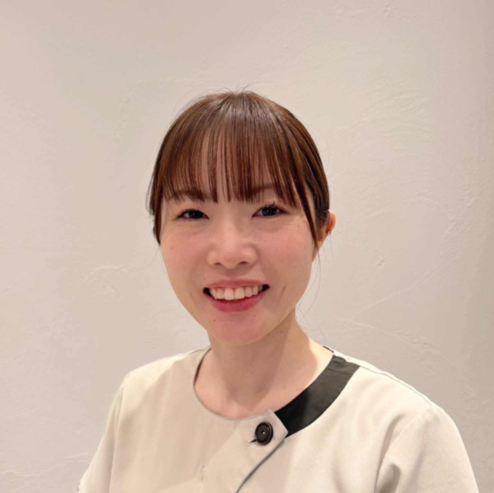
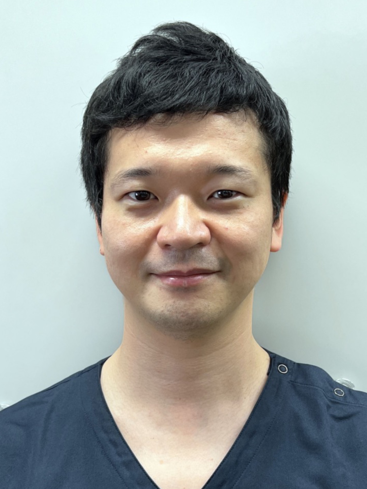
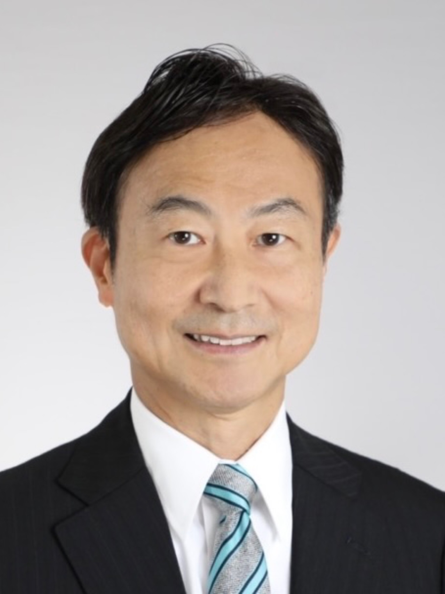
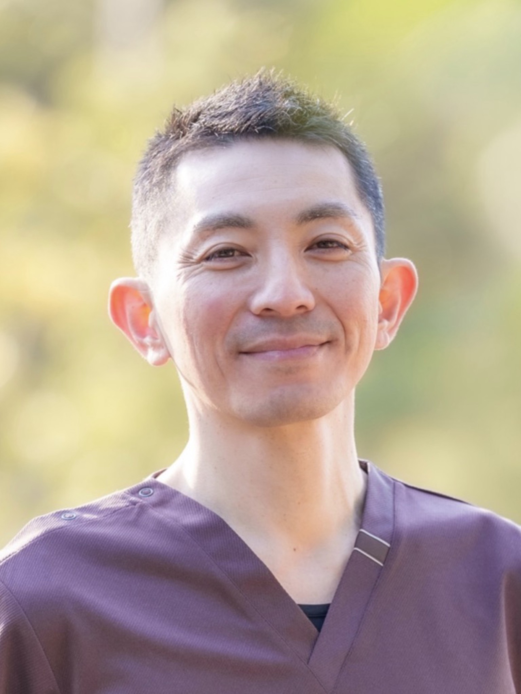

院長
歯科医師 / シカキンマネジメントドクター
歯科医師 / シカキンマネジメントドクター
福岡博史
筋肉・筋膜・姿勢・呼吸から考える
歯科筋筋膜セラピー
福岡歯科 祐天寺院では、歯科筋筋膜セラピー（シカキンセラピー）を通じて、
口腔内だけでなく、筋肉・筋膜・姿勢・呼吸まで
含めたトータルサポートを目指します。
顎の違和感、くいしばり、原因が分からない歯の痛み。
シカキンセラピーでは、歯だけではなく、筋肉・筋膜・姿勢・呼吸とのつながりまで含めて考えます。


顎の痛みや違和感は、必ずしも「歯」や「顎関節」だけが原因とは限りません。
近年の口腔顔面痛の分野では、筋肉・筋膜由来の痛みが関与するケースが多いことが注目されています。
姿勢・呼吸・食いしばり習慣・ストレス・首や肩の筋緊張などが複合的に影響することもあります。
だからこそ当院では、"歯だけを見る"のではなく、身体全体とのつながりを考えたサポートを大切にしています。

シカキンセラピーは、歯科医院で行う筋肉・筋膜アプローチです。 顎関節やくいしばり、口腔機能の状態を確認しながら、患者さん一人ひとりに合わせたセルフケア指導につなげます。
施術を受け続けることを目的にするのではなく、
患者さん自身がセルフケアを身につけ、
健康と美容を自分で維持できることを目指します。


※ 症状や状態によっては医科連携をご提案する場合があります。
※ 美容効果には個人差があります。症状の改善を保証するものではありません。
一般的な歯科治療では、
「歯」や「噛み合わせ」を中心に診ていきます。
シカキンセラピーでは、
そこに加えて、筋肉・筋膜・姿勢・呼吸など、
全身とのつながりまで含めて考えます。
どちらか一方ではなく、
それぞれの視点を大切にしながら、
患者さまのお悩みに向き合っています。
「美しさ」は表面だけで作られるものではありません。
筋肉・筋膜・姿勢・呼吸が整うことで、
顔貌から全身の印象まで、内側から変わっていきます。

歯科医師 / シカキンマネジメントドクターが、診断・管理・導入体制を支えます。

歯科医師の管理のもと、筋筋膜ケアとセルフケア指導をサポートします。


福岡歯科 祐天寺院のアプローチは、口腔顔面痛の最前線にある考え方と一致しています。筋肉・筋膜・姿勢・呼吸まで視野に入れた診療は、患者さんに本質的なケアを提供できる医院として、自信を持っておすすめできます。

福岡歯科 祐天寺院は、歯科と全身医療をつなぐ視点を持ち、これからの時代に求められる歯科のあり方を体現しています。セルフケア指導まで含めた包括的なサポートは、患者さんの生活の質を根本から変える可能性を持っており、心からおすすめします。

福岡歯科 祐天寺院はシカキンセラピーの理念を正しく体現し、患者さんに真摯に向き合う医院として、協会代表として推薦します。歯科医院でありながら身体全体を診る視点を持ち、セルフケアの定着まで寄り添う姿勢は、多くの方の健康に貢献できると確信しています。
福岡歯科 祐天寺院
〒000-0000
〇〇県〇〇市〇〇町0-0-0
TEL：000-0000-0000
症状だけを見るのではなく、
その背景にある「身体の使い方」と「美しさの土台」まで一緒に考える。
それが、当院のシカキンセラピーです。
まずはお気軽にご相談ください。